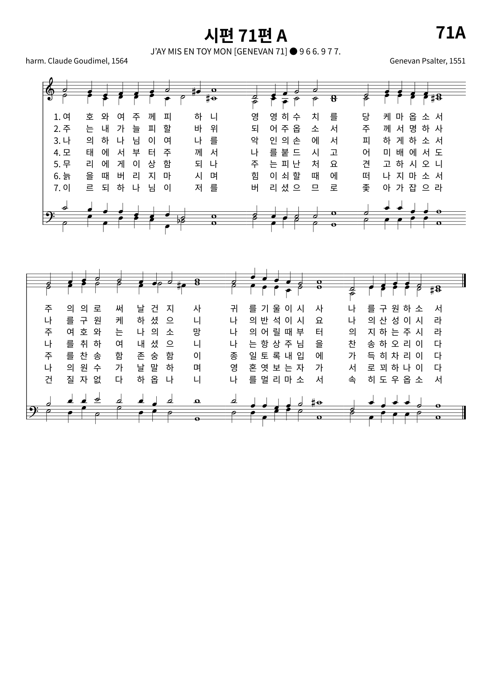

Psalm 71A
J’AY MIS EN TOY MON [GENEVAN 71] · 9 6 6. 9 7 7.
English title: In Thee, O LORD, I’ve Taken Refuge
Tune: Genevan Psalter, 1551 · Harmony: Claude Goudimel, 1564 · Lyrics: Korean adaptation of Psalm 71 from the Korean Revised Version (AI draft adaptation · not yet theologically reviewed) · 7 stanzas
Psalm 71 is divided into 2 tunes: A B · This tune contains stanzas 1–7 of the Psalm 71 lyrics.
Score PDF MusicXML (for printing) MusicXML (for accompaniment, with prelude and repeats) Read Psalm 71 (Korean Revised Version)
Score
← Psalm 70 ListAccompaniment (in preparation)Psalm 71B →
Lyrics (Korean)
Stanza 1
여호와여 주께 피하니
영영히 수치를
당케 마옵소서
주의 의로써 날 건지사
귀를 기울이시사
나를 구원하소서
여호와여 주께 피하니
영영히 수치를
당케 마옵소서
주의 의로써 날 건지사
귀를 기울이시사
나를 구원하소서
Stanza 2
주는 내가 늘 피할 바위
되어 주옵소서
주께서 명하사
나를 구원케 하셨으니
나의 반석이시요
나의 산성이시라
주는 내가 늘 피할 바위
되어 주옵소서
주께서 명하사
나를 구원케 하셨으니
나의 반석이시요
나의 산성이시라
Stanza 3
나의 하나님이여 나를
악인의 손에서
피하게 하소서
주 여호와는 나의 소망
나의 어릴 때부터
의지하는 주시라
나의 하나님이여 나를
악인의 손에서
피하게 하소서
주 여호와는 나의 소망
나의 어릴 때부터
의지하는 주시라
Stanza 4
모태에서부터 주께서
나를 붙드시고
어미 배에서도
나를 취하여 내셨으니
나는 항상 주님을
찬송하오리이다
모태에서부터 주께서
나를 붙드시고
어미 배에서도
나를 취하여 내셨으니
나는 항상 주님을
찬송하오리이다
Stanza 5
무리에게 이상함 되나
주는 피난처요
견고하시오니
주를 찬송함 존숭함이
종일토록 내 입에
가득히 차리이다
무리에게 이상함 되나
주는 피난처요
견고하시오니
주를 찬송함 존숭함이
종일토록 내 입에
가득히 차리이다
Stanza 6
늙을 때 버리지 마시며
힘이 쇠할 때에
떠나지 마소서
나의 원수가 날 말하며
영혼 엿보는 자가
서로 꾀하나이다
늙을 때 버리지 마시며
힘이 쇠할 때에
떠나지 마소서
나의 원수가 날 말하며
영혼 엿보는 자가
서로 꾀하나이다
Stanza 7
이르되 하나님이 저를
버리셨으므로
좇아가 잡으라
건질 자 없다 하옵나니
나를 멀리 마소서
속히 도우옵소서
이르되 하나님이 저를
버리셨으므로
좇아가 잡으라
건질 자 없다 하옵나니
나를 멀리 마소서
속히 도우옵소서